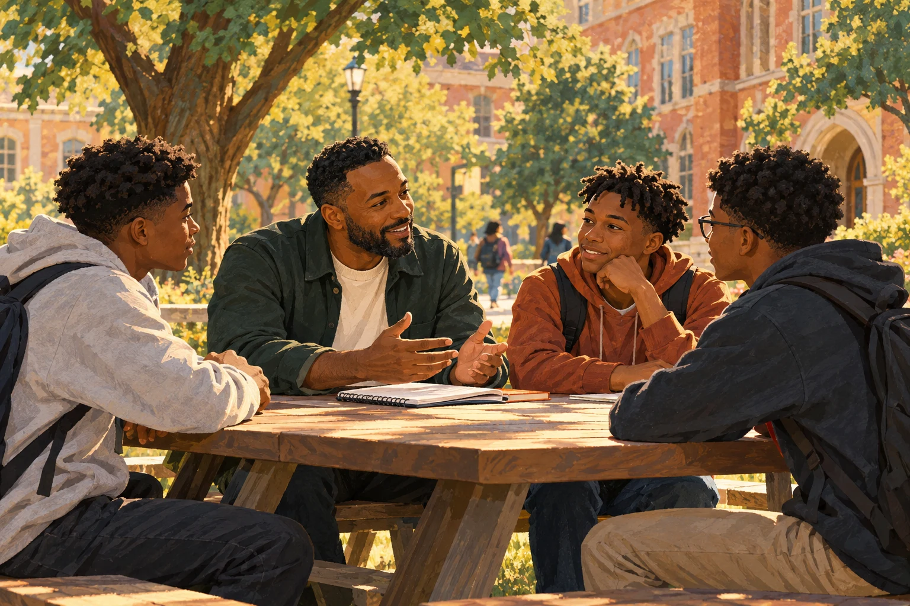

Find your footing.
Build the habits that help you do well in high school—from managing your time and setting goals to asking for support when you need it.
HIGH SCHOOL SUCCESSYou have a future worth building. You don’t have to figure it out alone.
Mentorship for Black male students at Edgewood High School—helping you thrive today and find your own way forward.
Explore your possibilities Meet the purpose behind the program
01 / OUR PURPOSE
The right guidance can change how you see yourself—and what you see ahead.
We support Black male high school students at Edgewood High School in Harford County, Maryland. Our purpose is simple: help young men navigate high school with confidence and prepare for a meaningful life beyond it.
Our mentors are typically male graduates of Historically Black Colleges and Universities (HBCUs). They bring lived experience, perspective, and a belief in the possibilities ahead of every student.
See what mentorship can look like02 / THE EXPERIENCE
Practical guidance for the decisions in front of you.
A bigger perspective on the future ahead.
Build the habits that help you do well in high school—from managing your time and setting goals to asking for support when you need it.
HIGH SCHOOL SUCCESSDevelop your voice, think through decisions, and learn from men who bring their own experiences to the conversation.
CONFIDENCE & CONNECTIONExplore college, skilled trades, and entrepreneurship. Understand your options and begin connecting your interests to your next steps.
LIFE AFTER GRADUATION03 / YOUR NEXT CHAPTER
There’s more than one way to build a meaningful life.
Start exploring what speaks to you.
THE COLLEGE PATH
Explore what college could look like for you, including the community and legacy of HBCUs. Connect your interests to what you might study and the experiences you want to have.
START WITH A QUESTION“What would I want from my college experience?”
HBCU ROOTS. EDGEWOOD FUTURES.
HBCUs have a powerful tradition of community, achievement, and opening doors. Our mentors bring that spirit to the conversations that help young men move forward.
Bring your experienceYou don’t need
every answer.
Start with a
conversation.
OUR TEAM
Experience to share.
A connection to the community we serve.
MEET OUR PROGRAM LEAD
Engineer · DEVCOM, Aberdeen Proving Ground
Tony leads the Edgewood Male Mentoring Program, bringing his engineering experience and a personal connection to the power of mentorship.
As a student at Edgewood High School, he participated in the Kenneth V. Hilton Mentorship Program. He went on to study electrical engineering at Morgan State University and later returned to help lead the mentoring program—a journey from receiving guidance to giving it back.
Have experience to share with the next generation?
Explore becoming a mentorA FEW THINGS TO KNOW
The Edgewood Male Mentoring Program serves Black male students attending Edgewood High School in Harford County, Maryland.
No. Exploring your interests and understanding your options is a good place to start. The program supports preparation for college, trade school, or entrepreneurship.
Our mentors are typically male HBCU graduates. They share their experiences and offer guidance to help students navigate high school and think about life after graduation.
Enrollment, meeting, and program contact details will be shared here when available. In the meantime, explore the pathways above and bring your questions about the program.
THERE’S A PLACE FOR YOU HERE
Students with ambition. Families with hope.
Mentors with experience to share.